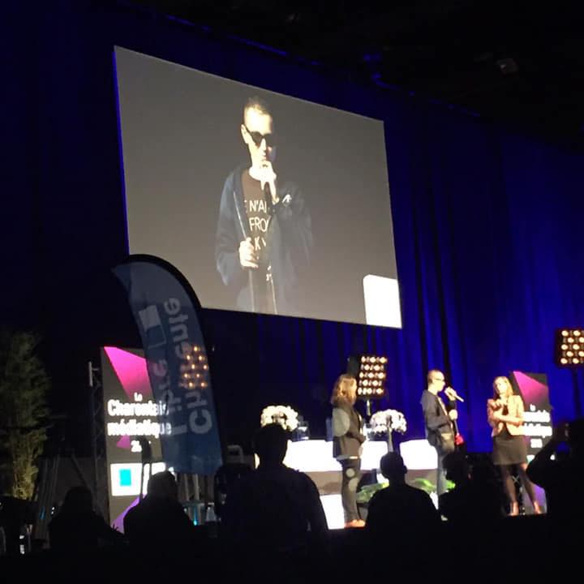

Perte de confiance
Quand on n'ose plus se projeter, entreprendre ou croire que quelque chose peut encore changer.
Confiance, énergie, clartéConférencier national et coach de vie
Après son accident, Marty a connu la perte de repères, les mauvaises influences et les mauvais choix. Le coaching privé s'adresse à celles et ceux qui veulent croire à nouveau en eux, retrouver de l'élan et avancer avec un cadre humain.

Pour qui ?
Quand on n'ose plus se projeter, entreprendre ou croire que quelque chose peut encore changer.
Confiance, énergie, clartéQuand un événement de vie impose de retrouver des repères et de faire des choix plus justes.
Déclic, méthode, progressionQuand une idée existe déjà, mais qu'il manque un cadre, une direction ou l'élan pour passer à l'action.
Objectif, rythme, actionDéroulé
Le coaching part de votre situation réelle. Pas de grande promesse, pas de méthode magique : un temps d'échange pour clarifier ce qui bloque, retrouver une direction et repartir avec des actions possibles.
Comprendre votre contexte, votre histoire récente et ce que vous cherchez à changer.
Clarifier ce qui compte vraiment, ce qui vous freine et ce qui peut être relancé.
Définir un prochain pas réaliste, précis et compatible avec votre vie actuelle.
Message de Marty
Aujourd'hui, Marty est devenu DJ producteur, a lancé une marque de vêtements pour non-voyants, écrit son histoire et accompagne d'autres personnes à se reconstruire. Son coaching garde ce fil : retrouver le goût de vivre, de rêver et de bâtir des projets.
Coaching privé
Réservez un échange si vous sentez qu'il est temps de remettre de la clarté, de la confiance et un projet concret dans votre quotidien.